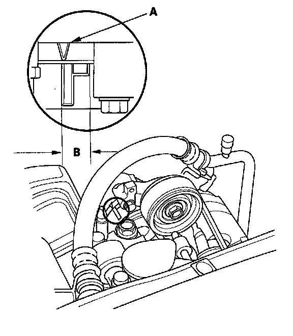

Drive Belt: Testing and Inspection
Drive Belt Inspection1. Inspect the belt for cracks and damage. If the belt is cracked or damaged, replace it.

2. Check that the auto-tensioner indicator (A) is within the standard range (B) as shown. If it is out of the standard range, replace the drive belt.